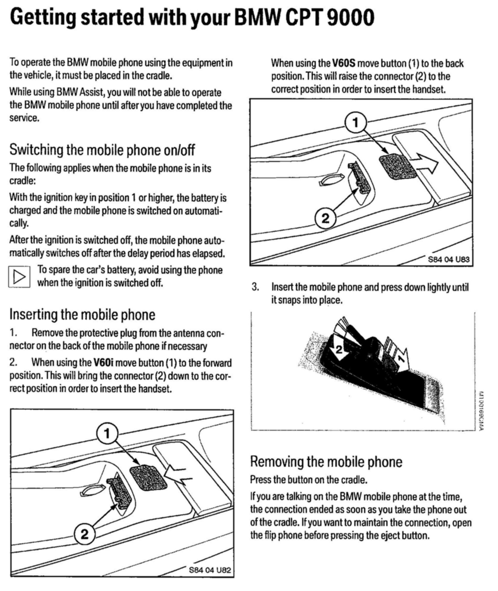

Bluetooth User Manual E60/E63/E64
A mobile phone lets you stay in touch wherever you go. This Owner's Manual will help you learn how to easily operate your mobile phone using features built into your vehicle. We wish you an enjoyable driving experience.Contents
Notes
Safety Notes
Overview
Getting Started With Your Bluetooth Phone

Getting Started With Your BMW CPT 9000

General Phone Instructions